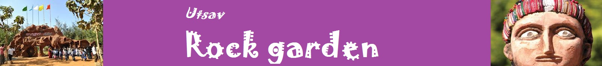

|  |
| Utsav Rock Garden Gotagodi, Tq: Shiggavi Dt: Haveri |
| Home About Us Gallery Activities Contact |
|
An ART, ARCHITECTURE & NATURE Combined at One Place. A World-Class tourist Spot of Karnataka,a place for your one day picnic spot near hubballi and haveri, you can host family get together. Rock garden is a best place for hosting school kids educational tours/trips. We have Worlds finest Art Gallery & Art Museum depicts village life style & culture. Very near to Hubballi,Haveri,Belgaume,Davangeri and Shimoga. Rock garden is attracting travellers & tourists from all the corners of karnataka and India.An Excellent exploration of North Karnataka's Culture through its Sculptures & Tasty Cuisine.Located Near to Hubballi just 37KM ahead towards Bangalore on NH4 at Gotagodi Village. Rock Garden visit will give you & your family, friends a unique experience that gives memorable moment to your time at utsav rock garden.Best tourism place nearby hubli. A typical art village which presents the forgotten rural empire is created. Here we can see the traditional architectural forms of house constructions, traditional farming & different rural professionalists.This Cultural & Educational tourist centre provides more information to Adults and children on Culture & Tradition. Every year vivid Art Galleries & various Sculptures will be established and installed here. Creative seating arrangements, Boat Ride & Special North Karnataka meals add more flavour to this place. This is where creativity explores one or the other way of our life. Utsav Rock Garden India is a sculptural garden near Gotagodi, Shiggaon Taluk, Haveri District, Karnataka, India. It features the contemporary art and rural culture of North Karnataka. It features more than a thousand sculptures, including the sculptural recreation of a typical art village depicting the labors of traditional craftsmen and artisans. |
| Home About Us Gallery Activities Contact |